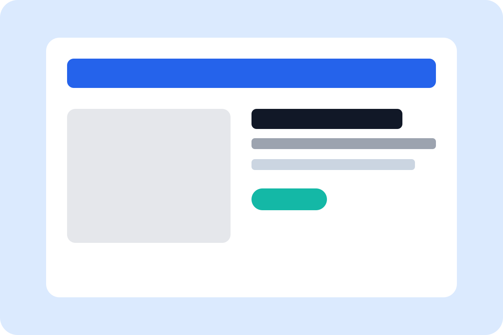

Personal Website
Eine responsive Portfolio-Seite mit klarer Struktur, Navigation und modernem Design.
Portfolio
Diese Galerie zeigt beispielhafte Projekte und Arbeitsproben. Die Karten sind so aufgebaut, dass Besucher schnell Thema, Ziel und eingesetzte Technologien erkennen.

Eine responsive Portfolio-Seite mit klarer Struktur, Navigation und modernem Design.
Konzept mit Wireframes, Mockups, Farbpalette und Typografie für ein Webprojekt.
Beispielhafte Einbindung von Bildern und Video-Platzhalter für Multimedia-Inhalte.